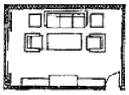
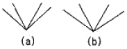
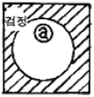
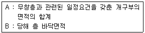

실내건축산업기사 (2009-05-10 기출문제)
1과목: 실내디자인론
1. 다음 중 실내디자인에 있어서 레이아웃(lay out)단계에서 고려해야 할 사항으로 가장 알맞은 것은?
- 동선계획
- 설비계획
- 가구계획
- 색채계획
(정답률: 77%)

2. 다음 중 질감(texture)에 대한 설명으로 맞는 것은?
- 스케일에 영향을 받지 않는다.
- 어떤 물체가 갖고 있는 표면적 특징을 말하며 감촉적인 것과 시각적인 것의 두가지 영역으로 구분할 수 있다.
- 유리, 빛을 내는 금속류, 거울 같은 재료는 반사율이 낮아 차갑게 느껴진다.
- 무게감은 전달할 수 있으나 온도감은 전달할 수 없다.
(정답률: 77%)
3. 실내디자인의 요소에 관한 설명 중 적합하지 않은 것은?
- 스툴(stool) : 등받이가 없는 의자
- 다운라이트(down light) : 바닥매입형 조명
- 유틸리티(utility) : 다용도실
- 캐스케이드(cascade) : 계단식 폭포
(정답률: 67%)
4. 디자인을 위한 조건 중 최소의 재료와 노력에 의해 최대의 효과를 얻고자 하는 것은?
- 합목적성
- 경제성
- 심미성
- 독창성
(정답률: 86%)
5. 디자인 요소인 선에 관한 설명으로 알맞지 않은 것은?
- 사선은 기울기가 있는 선으로 약동감을 느끼게 한다.
- 곡선은 유연, 우아, 풍요, 여성스런 느낌을 주며 기하곡선과 자유곡선이 있다.
- 수직선은 구조적인 높이와 존엄성을 느끼게 한다.
- 수평선은 방향성과 생동감을 느끼게 한다.
(정답률: 85%)
6. 디자인의 구성원리 중 형태를 현실적 형태와 이념적 형태로 구분할 경우, 다음 중 이념적 형태에 대한 설명으로 옳은 것은?
- 인간의 지각으로는 직접 느낄 수 없는 형태이다.
- 주위에 실제 존재하는 모든 물상을 말한다.
- 인간에 의해 인위적으로 만들어진 모든 사물, 구조체에서 볼 수 있는 형태이다.
- 자연계에 존재하는 모든 것으로부터 보이는 형태를 말한다.
(정답률: 77%)
7. 천장에 매달려 조명하는 방식으로 조명기구 자체가 빛을 발하는 악세사리 역할을 하는 조명방식은?
- 다운라이트(down light)
- 스포트라이트(spot light)
- 펜던트(pendant)
- 브라켓(bracket)
(정답률: 91%)
8. 다음 중 실내디자인의 개념과 가장 거리가 먼 것은?
- 디자인 행위
- 공간예술
- 계획, 실행과정, 결과
- 순수예술
(정답률: 90%)
9. 디자인의 원리 중 균형에 대한 설명으로 옳지 않은 것은?
- 대칭적 균형은 가장 완전한 균형의 상태이다.
- 비대칭 균형은 능동의 균형, 비정형 균형이라고도 한다.
- 방사형 균형은 한 점에서 분산되거나 중심점에서부터 원형으로 분산되어 표현된다.
- 명도에 의해서 균형을 이끌어 낼 수 있으나 색채에 의해서는 균형을 표현할 수 없다.
(정답률: 80%)
10. 방풍 및 열손실을 최소로 줄여주는 반면 통행의 흐름을 완만히 해주는데 가장 유리한 출입문 방식은?
- 미닫이문
- 회전문
- 여닫이문
- 미서기문
(정답률: 78%)
11. 상업공간 실내계획의 조건설정 단계에서 고려해야할 사항으로 옳은 것은?
- 대상고객층 및 취급상품의 결정
- 가구배치 및 동선계획
- 파사드 이미지 설정
- 재료마감과 시공법의 확정
(정답률: 59%)
12. 미술관의 실내계획시 그려할 사항과 가장 관계가 적은 것은?
- 전시장 내의 관람자들의 동선계획
- 전시장의 전시품들을 위한 조명계획
- 효과적인 전시를 위한 전시방법 계획
- 전시품에 집중할 수 있는 음향계획
(정답률: 81%)
13. 대형 업무용 빌딩에서 공적인 문화공간의 역할을 담당하기에 가장 적절한 공간은?
- 로비 공간
- 회의실 공간
- 직원 라운지
- 비즈니스센터
(정답률: 85%)
14. 실내디자인 프로세스에서 요구조건을 파악한 후 이를 분석하는 방법으로 가장 적절하지 못한 것은?
- 요구조건의 항목들을 유사한 것끼리 그룹화 하여 분석을 용이하게 한다.
- 전체적인 디자인 이미지에 부합하지 않는 요구 항목은 제거한다.
- 요구조건 등을 해결해야할 중요성을 고려하여 우선순위를 정한다.
- 제약조건 등을 반영하여 해결의 용이성과 가능성을 검토한다.
(정답률: 78%)
15. 주거공간계획에 있어 다음과 같은 거실의 가구배치의 유형은?

- 대면형
- ㄷ자형(U자형)
- 직선형
- ㄱ자형
(정답률: 72%)
16. 상점의 동선계획에 관한 설명 중 옳지 않은 것은?
- 고객 동선은 가능한 짧고 간단하게 하는 것이 이상적이다.
- 종업원 동선은 작업의 효율성과 피로의 감소를 고려하여 계획한다.
- 상품 동선은 상품의 반∙출입, 보관, 포장, 발송 등과 같은 상점 내에서 상품이 이동하는 동선이다.
- 동선 계획은 평면 계획의 기본요소로 기능적으로 역할이 서로 다른 동선은 교차되거나 혼용되어서는 안된다.
(정답률: 88%)
17. 전통 한옥의 구조에서 중채 또는 바깥채에 있어 주로 남자가 기거하고 손님을 맞이하는데 쓰이는 방은?
- 안방
- 건넌방
- 사랑방
- 대청
(정답률: 88%)
18. 리듬에 대한 설명으로 가장 알맞은 것은?
- 서로 다른 요소들 사이에서 평형을 이루는 상태이다.
- 규칙적인 요소들의 반복으로 디자인에 시각적인 질서를 부여하는 통제된 운동감각을 말한다.
- 모든 조형에 대한 미의 근원이 된다.
- 음악적 감각인 청각적 원리를 촉각적으로 표현한 것이다.
(정답률: 75%)
19. 디자인 원리인 통일과 변화에 대한 설명으로 맞는 것은?
- 변화는 적절한 절제가 되지 않으면 공간의 통일성을 깨트린다.
- 조형에 대한 부수적 요소가 된다.
- 디자인에서 통일은 다양한 변화를 의미한다.
- 통일과 변화는 상호 대립된 관계로 서로 공존할 수 없다.
(정답률: 68%)
20. 계단 및 경사로의 계획시 우선적으로 고려하지 않아도 될 사항은?
- 각 실과의 동선관계
- 건축법규에 의한 설치 규정
- 통행자의 빈도, 연령 및 성별
- 강도, 내구성, 경제성
(정답률: 41%)
2과목: 색채 및 인간공학
21. 다음 중 인체측정에 대한 설명으로 틀린 것은?
- 인체측정자료는 크게 '구조적 인체지수'와 '기능적 인체지수'로 구분된다.
- 인체측정시에는 마틴식 인체계측기를 이용하여 3차원계측을 실시한다.
- 그네줄의 인장강도는 인체측정자료 중 최대치를 이용하여 설계한다.
- 인체부분의 각 길이는 신자에 대한 비율로 나타낼 수 있으며, 이를 통해 실제로 측정하지 않은 부분의 길이를 추정할 수 있다.
(정답률: 42%)
22. 다음 중 실내의 추천반사율이 가장 낮은 것은?
- 창문
- 벽
- 바닥
- 천장
(정답률: 71%)
23. 다음 그림과 같이 (a)와 (b)각각의 중앙부 각도는 같으나 (b)의 가도가 (a)의 각도보다 작게 보이는 착시현상을 무엇이라 하는가?

- 분할의 착시
- 방향의 착시
- 대비의 착시
- 동화의 착시
(정답률: 40%)
24. 다음 중 작업내용에 따른 작업대의 높이가 높은 것에서부터 낮은 순서대로 올바르게 나열된 것은?
- 타이핑 작업 - 쓰고, 읽기 작업 - 정밀작업
- 정밀작업 - 쓰고, 읽기 작업 - 타이핑 작업
- 쓰고, 읽기 작업 - 정밀작업 - 타이핑 작업
- 정밀작업 - 타이핑 작업 - 쓰고, 읽기 작업
(정답률: 47%)
25. 다음 중 광원으로부터의 직사휘광에 대한 조치방법으로 적절하지 않은 것은?
- 광원을 시선에서 멀리 위치시킨다.
- 광원의 휘도를 줄이고 광원의 수를 늘린다.
- 가리개(shield), 갓(hood), 차양(visor)등을 사용한다.
- 휘광원 주위를 어둡게 하고, 휘도비를 높인다.
(정답률: 64%)
26. 다음 중 게슈탈트(Geatalt)의 법칙에 대한 설명으로 틀린 것은?
- 접근성 : 근접한 것끼리는 같은 패턴으로 보여질 가능성이 크다.
- 유사성 : 비슷한 형태, 색채, 질감은 같은 요소로 보여진다.
- 연속성 : 유사한 배열은 하나의 묶음으로 보여진다.
- 폐쇄성 ; 불완전한 선과 형태는 폐쇄적으로 보여진다.
(정답률: 50%)
27. 인간-기계의 특성 중 인간이 기계보다 우수한 기능은?
- 명시된 프로그램에 따라 정량적인 정보처리를 한다.
- 반복적인 작업을 신뢰성있게 수행한다.
- 특정 방법이 실패할 경우 다른 방법을 고려하여 선택한다.
- 물리적인 양을 정확히 계산하거나 측정한다.
(정답률: 95%)
28. 다음 중 소리를 청신경 중추에 보내는 역할을 하는 것은?
- 외이
- 내이
- 중이
- 고막
(정답률: 45%)
29. 피부감각을 느끼는 신경점 중 피부의 단위 면적당 신경의 수가 가장 많은 것은?
- 통점
- 열점
- 냉점
- 압점
(정답률: 72%)
30. 다음 중 운동의 속도에 관한 생체 역학적 설명으로 틀린 것은?
- 손의 수직운동은 수평운동보다 빠르다.
- 운동의 최대속도는 이동시키는 하중에 일반적으로 반비례한다.
- 최대속도에 이르는 시간은 하중에 비례하여 증가한다.
- 연속적인 곡선운동이 여러 번 방향을 바꾸는 운동보다 빠르다.
(정답률: 50%)
31. 명시도가 높은 배색을 하기 위해서 ⓐ의 색으로 다음 가장 적합한 것은?

- 연두
- 녹색
- 빨강
- 자주
(정답률: 54%)
32. 감법혼색의 설명 중 틀린 것은?
- 색을 더할 수록 밝기가 감소하는 색혼합으로 어두워지는 혼색을 말한다.
- 감법혼색의 원리는 컬러 슬라이드 필름에 응용되고 있다.
- 인쇄시 색료의 3원색인 C, M, Y로 순수한 검은색을 얻지 못하므로 추가적으로 검은색을 사용하며 K로 표기한다.
- 2가지 이상의 색자극을 반복시키는 계시혼합의 원리에 의해 색이 혼합되어 보이는 것이다.
(정답률: 49%)
33. 다음 중 명시도의 가장 중요시 하는 분야는?
- 안전사고 방지표시
- 실내장식
- 포장디자인
- 마크디자인
(정답률: 86%)
34. 유리컵에 담겨있는 포도주라든지 얼음 덩어리를 보듯이 일정한 공간에서 3차원적인 덩어리가 꽉 차 있는 부피감에서 보이는 색은?
- 표면색
- 투명면색
- 경영색
- 공간색
(정답률: 50%)
35. 먼셀 색상환에서 GY는 어느 색인가?
- 초록
- 연두
- 노랑
- 하늘색
(정답률: 89%)
36. 난색계통의 색상에 더욱 흥분감을 주기 위한 명도와 채도는?
- 고명도, 고채도
- 고명도, 저채도
- 저명도, 고채도
- 저명도, 저채도
(정답률: 73%)
37. 베졸드 효과와 관련이 있는 것은?
- 색의 대비
- 동화현상
- 연상과 상징
- 계시대비
(정답률: 55%)
38. 다음 중 가장 무거운 느낌의 색은?
- 명도가 높은 적색
- 명도가 높은 황색
- 중명도의 자색
- 명도가 낮은 청색
(정답률: 73%)
39. 그림, 사진, 문서 등을 컴퓨터에 입력하기 위한 장치로 반사광, 투과광을 이용, 비트맵 데이터로 전환시키는 입력장치는?
- 디지털 카메라
- 디지타이저
- 스캐너
- 디지털 비디오 카메라
(정답률: 83%)
40. 색채 조화에서 공통되는 원리가 아닌 것은?
- 부조화의 원리
- 질서의 원리
- 동류의 원리
- 유사의 원리
(정답률: 50%)
3과목: 건축재료
41. 다음 미장재료 중 수경성인 것은?
- 돌로마이트 플라스터
- 회사벽
- 시멘트 모르타르
- 회반죽
(정답률: 55%)
42. 감람석이 변질된 것을 암녹색 바탕에 아름다운 무늬를 갖고 있으나 풍화성이 있어 실내장식용으로서 대리석 대용으로 사용되는 것은?
- 현무암
- 사문암
- 안산암
- 응회암
(정답률: 62%)
43. 합성수지에 대한 설명 중 옳지 않은 것은?
- 페놀수지는 내열성·내수성이 양호하며 파이프, 덕트 등에 사용된다.
- 염화비닐수지는 열가소성 수지에 속한다.
- 실리콘 수지는 전기적 성능은 우수하나 내약품성·내후성이 좋지 않다.
- 에폭시수지는 내약품성이 양호하며 금속도려 및 접착제로 쓰인다.
(정답률: 56%)
44. 다음의 재료 중에서 비강도(比强度)가 가장 높은 것은?
- 목재
- 콘크리트
- 강재
- 석재
(정답률: 54%)
45. 목재의 외관을 손상시키며 강도와 내구성을 저하시키는 목재의 흠에 해당하지 않는 것은?
- 갈라짐(crack)
- 옹이(knot)
- 지선(脂線)
- 수피(樹皮)
(정답률: 48%)
46. 다음 중 회반죽의 주요 배합과 재료로 가장 알맞은 것은?
- 색석회, 해초풀, 여물, 수염
- 소석회, 모래, 해초풀, 여물
- 소석회, 돌가루, 해초풀, 수염
- 돌가루, 모래, 해초풀, 여물
(정답률: 61%)
47. 강(鋼)에 함유된 탄소 성분이 끼치는 영향이 아닌것은?
- 강도의 증감
- 연율(신율)의 증감
- 내산성의 증감
- 경도의 증감
(정답률: 52%)
48. 열가소성 수지의 일종으로 광선이나 자외선의 투과성이 크고, 내후성, 내약품성이 큰 무색투명판 등으로 활용되는 것은?
- 멜라민수지
- 아크릴수지
- 알키드수지
- 에폭시수지
(정답률: 62%)
49. 다음 중 커튼월이나 프리패브재의 접합부, 새시 부착 등의 충전재로 가장 적당한 것은?
- 아교
- 알부민
- 실링재
- 아스팔트
(정답률: 80%)
50. 플라이 애시(fly-ash)를 시멘트에 혼합하였을 때의 효과로 옳지 않은 것은?
- 수밀성이 증대된다.
- 수화열과 건조수축이 작아진다.
- 워커빌리티가 좋아진다.
- 초기강도는 증가하지만 장기강도는 감소된다.
(정답률: 55%)
51. 목재의 특성에 관한 설명 중 옳지 않은 것은?
- 가공이 용이하다.
- 열전도율이 높다.
- 온도에 다른 신축이 적다.
- 충격ㆍ진동 등에 대한 흡수성이 크다.
(정답률: 76%)
52. 타설 후 2~3시간에 거푸집을 제거할 수 있을 정도로 매우 강도의 발현이 빠르고 장기에 걸친 강도 증진과 안정성이 높은 시멘트로써 제트시멘트라고도 하는 것은?
- 조강포틀랜드시멘트
- 실리카시멘트
- 초속경시멘트
- 알루미나시멘트
(정답률: 39%)
53. 경량 기포 콘크리트(ALC)의 특징 중 옳지 않은 것은?
- 열전도율이 낮다.
- 흡음률이 보통콘크리트에 비해 크다.
- 다공질로서 강도가 작다.
- 흡수성이 낮아 동해에 대한 저항성이 강하다.
(정답률: 47%)
54. 돌로마이트 플라스터에 대한 설명으로 옳은 것은?
- 소석회에 비해 점성이 낮고, 작업성이 좋지 않다.
- 여물을 혼합하여도 건조수축이 크기 때문에 수축균 열을 발생하는 결점이 있다.
- 회반죽에 비해 조기강도 및 최종강도가 작다.
- 물과 반응하여 경화하는 수경성 재료이다.
(정답률: 47%)
55. 건물에 통상 사용되는 도료 중 내후성, 내알칼리성, 내산성 및 내수성이 가장 좋은 것은?
- 에나멜 페인트
- 페놀수지 바니시
- 알루미늄 페인트
- 에폭시수지 도료
(정답률: 68%)
56. 지름이 0.9, 1.2, 2.0mm등의 철선으로 만들며 마름모꼴, 갑형, 원형 등의 형태를 가지고 바름벽 바탕용으로 쓰이는 금속제품은?
- 와이어라스
- 논슬립
- 코너비드
- 듀벨
(정답률: 68%)
57. 다음 중 단열재에 관한 설명으로 옳지 않은 것은?
- 열전도율이 낮은 것일수록 단열효과가 좋다.
- 열관류율이 높은 재료는 단열성이 낮다.
- 같은 두께인 경우 경량재료인 편이 단열효과가 나쁘다.
- 단열재는 보통 다공질의 재료가 많다.
(정답률: 60%)
58. 다음 석재 중 박판으로 채취할 수 있어 슬레이트 등에 사용되는 것은?
- 응회암
- 점판암
- 사문암
- 트래버티
(정답률: 45%)
59. 다음 중 창호공사에 쓰이는 철물이 아닌 것은?
- 도어 클로저(door closer)
- 플로어 힌지(floor hinge)
- 피벗 힌지(pivot hinge)
- 프리 엑세스 플로어(free access floor)
(정답률: 55%)
60. 풍화된 시멘트를 사용했을 경우에 대한 설명 중 옳지 않은 것은?
- 응결이 늦어진다.
- 수화열이 증가한다.
- 비중이 작아진다.
- 강도가 감소된다.
(정답률: 52%)
4과목: 건축일반
61. 건축물이 설치하는 방화벽의 구조에 대한 설명으로 옳지 않은 것은?
- 출입문의 너비 및 높이는 각각 2.5m이하로 한다.
- 출입문은 갑종방화문 또는 을종방화문으로 한다.
- 내화구조로서 홀로 설 수 있는 구조로 한다.
- 방화벽의 양쪽 끝과 윗쪽 끝을 건축물의 외벽면 및 지붕면으로부터 0.5미터이상 튀어 나오게 한다.
(정답률: 57%)
62. 소방관계법령에서 정의한 무창층에 해당하는 기준으로 옳은 것은?

- A/B ≦ 1/10
- A/B ≦ 1/20
- A/B ≦ 1/30
- A/B ≦ 1/40
(정답률: 54%)
63. 건축허가등을 함에 있어서 미리 소방본부장 또는 소방서장의 동의를 받아야 하는 건축물의 기준은 연면적이 얼마 이상인가?
- 150m2
- 330m2
- 400m2
- 500m2
(정답률: 68%)
64. 학교의 바깥쪽에 이르는 출입구에 계단을 대체하여 경사로를 설치하고자 한다. 필요한 경사로의 최소 수평길이는? (단, 경사로는 직선으로 되어 있으며 1층의 바닥높이는 지방보다 50cm높다.)
- 2m
- 3m
- 4m
- 5m
(정답률: 45%)
65. 돌구조에서 상하돌의 맞댐면 양쪽에 구멍을 파서 전단보강을 목적으로 한 고정 철물은?
- 촉
- 은장
- 꺽쇠
- 장부
(정답률: 27%)
66. 건축물의 방화구획 설치기준으로 옳지 않은 것은?
- 5층 이상의 층은 층마다 구획할 것
- 10층 이하의 층은 바닥면적 1,000m2이내마다 구획할 것
- 지하층은 층마다 구획할 것
- 11층 이상은 층은 바닥면적 200m2이내마다 구획할 것
(정답률: 58%)
67. 로코코시대 실내디자인에 관한 설명 중 옳지 않은 것은?
- 바로크 인상에 비해 세련되고 아름다운 곡선으로 표현된다.
- 기능별로 여러 개의 방을 실제 사용하기 편하게 배치하였다.
- 개인 위주의 프라이버시를 중요시 하였다.
- 로코코양식은 르네상스 말기에 이탈리아에서 시작되었다.
(정답률: 52%)
68. 철근콘크리트조의 벽판을 현장 수평지면에서 제작하여 굳은 다음 제자리에 옮겨 놓고, 일으켜 세워서 조립하는 공법은?
- 리프트 슬래브 공법
- 커튼월 공법
- 포스트텐션 공법
- 틸트업 공법
(정답률: 65%)
69. 철골 구조에서 고력 볼트의 특성에 관한 설명 중 옳지 않은 것은?
- 응력 집중이 적지만 반복 응력에 약하다.
- 불량 개소 수정이 용이하다.
- 마찰접합의 경우 전단 또는 지압응력이 생기지 않는다.
- 정확한 계기공구로 죄어 일정하고 정확한 강도를 얻을 수 있다.
(정답률: 36%)
70. 다음 건축물 중 국가기술자격법에 의한 건축구조 기술사가 구조계산을 하지 않아도 되는 것은?
- 층수가 10층이고 기둥간격이 30미터인 건축물
- 층수가 12층이고 기둥간격이 10미터인 건축물
- 층수가 15층이고 기둥간격이 30미터인 건축물
- 다중이용건축물
(정답률: 40%)
71. 다음 중 조적조 건물에서 외벽을 공간쌓기로 하는 가장 주된 이유는?
- 방습
- 방진
- 내화
- 방화
(정답률: 40%)
72. 한국의 목조건축에서 기둥 밑에 놓아 수직재인 기둥을 고정하는 것은?
- 안방
- 주도
- 초석
- 기단
(정답률: 47%)
73. 문화 및 집회시설, 종교시설, 판매시설 등의 건축물의 바깥쪽으로 나가는 출입문이 유리일 경우 다음중 어떤 유리를 사용하여야 하는가?
- 복층유리
- 투명유리
- 안전유리
- 반사유리
(정답률: 64%)
74. 벽돌쌓기 중 화란식 쌓기에서 모서리 벽 끝에 사용하는 벽돌의 크기는?
- 반절
- 이오토막
- 반토막
- 칠오토막
(정답률: 45%)
75. 서양 건축에서 석재로 마감된 벽면을 육중하고 대담한 효과를 주기 위해, 주로 1층이나 건물의 양단부에 거친 수법으로 처리하는 방식은?
- 러스티케이션(Rustication)
- 몰딩(Molding)
- 모자이크(Mosaic)
- 테라코타(Terra cotta)
(정답률: 56%)
76. 다음 중 알바알토의 작품이 아닌 것은?
- 파이미오 요양소
- 비이퓨리 시립도서관
- M.I.T 기숙사
- 낙수장
(정답률: 61%)
77. 보강블록조에서의 벽량은 내력벽 길이의 총 합계를 그 층의 무엇으로 나눈 값인가?
- 적재하중
- 벽면적
- 개구부면적
- 바닥면적
(정답률: 67%)
78. 6층 이상의 거실 면적의 합계가 20,000m2인 교육연구 및 복지시설의 승용승강기의 최소 설치 대수로 옳은 것은?
- 15인승 5대
- 15인승 6대
- 15인승 7대
- 15인승 8대
(정답률: 36%)
79. 콘크리트 타설시 기둥, 벽, 보 등의 측면 거푸집은 측압이 발생하는데 이 측압의 크기에 영향을 주는 요소들에 관한 설명으로 옳은 것은?
- 콘크리트 비중이 클수록 측압이 적다.
- 타설시 콘크리트의 온도가 높을수록 측압이 크다.
- 거푸집 강성이 클수록 측압이 적다.
- 응결시간이 빠른 시멘트를 사용할 수 록 측압이 적다.
(정답률: 31%)
80. 다음 중 철근콘크리트 보에 대한 설명으로 옳지 않은 것은?
- 압축측에도 철근을 배근한 것을 복근보라 한다.
- 전단력을 보강하여 보의 주근 주위에 둘러감은 철근을 늑근이라 한다.
- 단순보의 인장력은 보의 중앙부에서 최대로 된다.
- 연속보의 각 지점에서는 하부에 주근을 많이 배근한다.
(정답률: 29%)